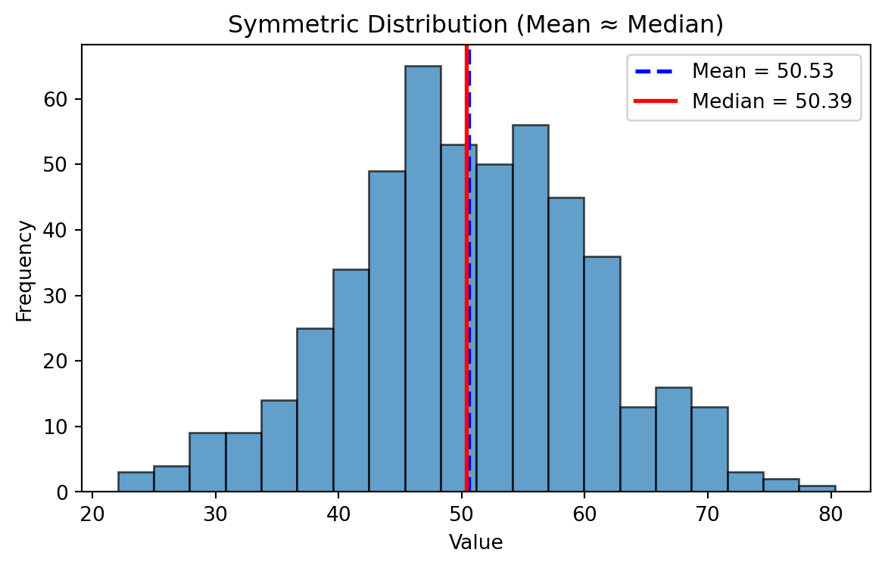
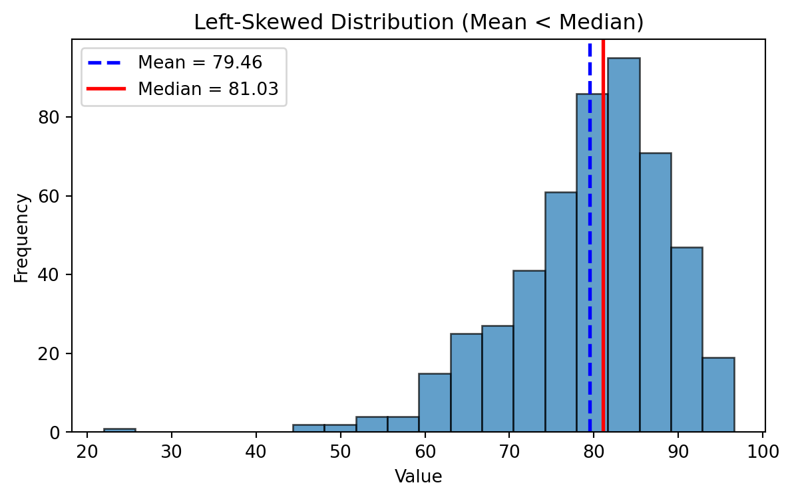
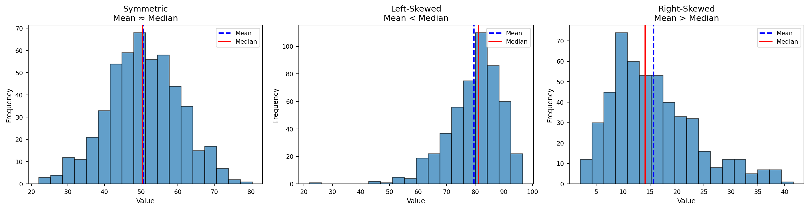
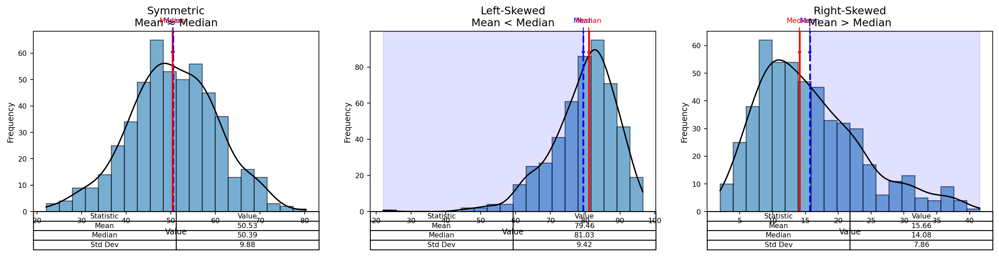
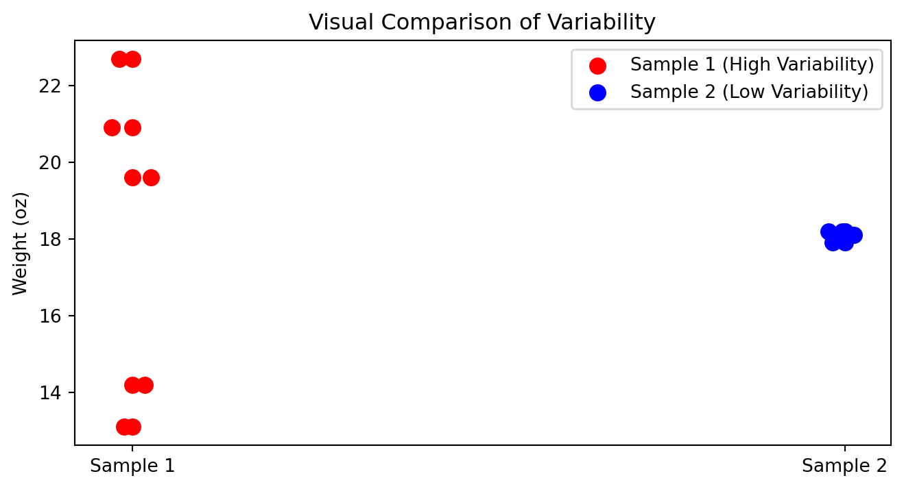
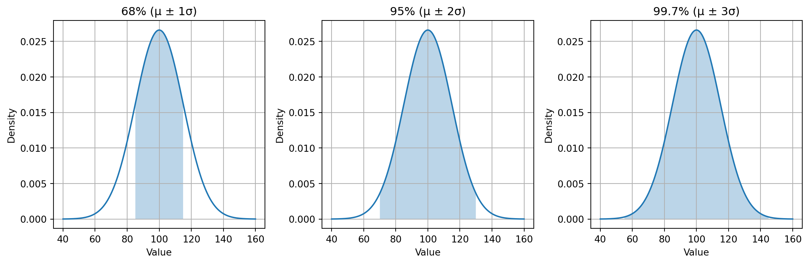

%%{init: {"theme": "default", "logLevel": "fatal"}}%%
graph TD
A["Data Types"] --> B["Qualitative (Categorical)"]
A --> C["Quantitative (Numerical)"]
B --> D["Nominal"]
B --> E["Ordinal"]
C --> F["Discrete"]
C --> G["Continuous"]
A --> H["Other Types"]
H --> I["Binary"]
H --> J["Time-Series"]
H --> K["Textual / Unstructured"]
H --> L["Spatial / Geographical"]
Data Types
Statistical Thinking
Karen Hovhannisyan
2026-02-01
Why Data Types Matter
Before calculating averages or plotting charts, it’s essential to recognize what kind of data you’re working with.
The classification of a variable determines:
- Which summary statistics are meaningful?
- Which visualizations can be used?
- How relationships between variables should be interpreted?
Qualitative Data
Qualitative data describe qualities, categories, or labels rather than numbers.
| Subtype | Definition | Examples |
|---|---|---|
| Nominal | Categories with no natural order | Gender (Male/Female), City (Paris, Yerevan, Tokyo) |
| Ordinal | Categories with a meaningful order, but unequal spacing | Education Level (High < Bachelor < Master < PhD), Satisfaction * (Low–Medium–High)* |
Quantitative Data
Quantitative data represent measurable quantities that can be used in arithmetic operations.
| Subtype | Definition | Examples |
|---|---|---|
| Discrete | Countable numbers, often integers | Number of customers, Complaints per day |
| Continuous | Measured values within a range | Temperature, Age, Revenue, Weight |
Additional Data Types
| Type | Definition | Example Applications |
|---|---|---|
| Binary | Two possible outcomes (Yes/No, 0/1) | Subscription status, churn indicator |
| Time-Series | Observations recorded sequentially over time | Daily sales, hourly temperature |
| Textual / Unstructured | Words, sentences, or documents | Customer reviews, tweets |
| Spatial / Geographical | Location-based information | Store coordinates, delivery zones |
Flowchart
Measures of Central Tendency
Once we understand our data types, the next step is to summarize them with simple, representative numbers.
These are called measures of central tendency, and they tell us where the “center” of our data lies.
The three most common measures are:
- Mean — the average value
- Median — the middle value
- Mode — the most frequent value
Mean
The mean is the sum of all values divided by the number of observations.
| Example | Calculation |
|---|---|
| Data: 5, 7, 8, 10 | Mean = (5 + 7 + 8 + 10) / 4 = 7.5 |
Sample Mean
\[ \bar{x} = \frac{\sum_{i=1}^{n} x_i}{n} \]
Population Mean
(same, only notation is different)
\[ \mu = \frac{\sum_{i=1}^{N} x_i}{N} \]
Weighted Mean
| Type | Score | Weight (%) |
|---|---|---|
| Exam | 94 | 50 |
| Project | 92 | 35 |
| Homework | 100 | 15 |
(Weights do not need to add up to one!)
\[ \bar{x} = \frac{\displaystyle \sum_{i=1}^{n} (w_i x_i)} {\displaystyle \sum_{i=1}^{n} w_i} \]
Sample Mean Example
When to Use?
- Conveinent measurement clear to everybody
- Works well with continuous or discrete numerical data.
- Sensitive to outliers (extreme values can distort the result).
Given the 5 observations:
\[ \bar{x} = \frac{\sum_{i=1}^{5} x_i}{5} = \frac{14.2 + 19.6 + 22.7 + 13.1 + 20.9}{5} = \frac{90.5}{5} = 18.1 \ \]
\[ \mu = \frac{\sum_{i=1}^{5} x_i}{5} = \frac{300 + 320 + 270 + 210 + 8{,}000}{5} = \frac{9{,}100}{5} = 1{,}820 \]
Median
The median is the value that separates the dataset into two equal halves.
Steps to calculate:
- Order the data from smallest to largest.
- If the number of observations is odd → midfdle value.
- If even → average of the two middle values.
| Example | Calculation |
|---|---|
| Data: 2, 5, 7, 9, 12 | Median = 7 |
| Data: 3, 5, 8, 10 | Median = (5 + 8)/2 = 6.5 |
Mode
The mode is the value that appears most often.
| Example | Calculation |
|---|---|
| Data: 2, 3, 3, 4, 5, 5, 5, 7 | Mode = 5 |
When to Use?
- Ideal for categorical or discretfe data.
- A dataset can have:
- One mode → unimodal
- Two modes → bimodal
- More than two → multimodal
- One mode → unimodal
Comparison of Mean, Median, and Mode
| Measure | Best For | Sensitive to Outliers? | Data Type | Example Context |
|---|---|---|---|---|
| Mean | Symmetrical distributions | Yes | Continuous, Discrete | Average income |
| Median | Skewed distributions | No | Continuous | Typical housing price |
| Mode | Categorical / Repeated values | No | Nominal, Ordinal | Most common product category |
Frequency Distributions
Visual Insight:
- In a perfectly symmetrical distribution: \(Mean = Median = Mode\)
- In a right-skewed distribution: \(Mean \gt Median \gt Mode\)
- In a left-skewed distribution: \(Mean \lt Median \lt Mode\)
Symmetric Distribution
Mean ~ Median

Left Skewed Distributions

Right Skewed Distributions

Symmetric vs Left-Skewed vs Right-Skewed

Better Visual

Measures of Variability
Measures of Variability
- Range
- Variance
- Standard Deviation (SD)
Range
\[ \text{Range = Highest Value - Lowest Value} \]
- Think about where is it applicable?
- Are there any limitations
Variance
Sample Variance:
\[ s^{2} = \frac{\sum_{i=1}^{n} (x_i - \bar{x})^{2}}{n - 1} \]
Population Variance:
\[ \sigma^{2} = \frac{ \displaystyle \sum_{i=1}^{N} (x_i - \mu)^{2} }{ N } \]
Standard Deviation
Sample Standard Deviation (Standard Error)
\[ \displaystyle s=\sqrt{s^2} \]
Population standard deviation
\[ \sigma = \sqrt{ \frac{ \displaystyle \sum_{i=1}^{N} (x_i - \mu)^{2} }{ N } } \]
How to compare variability?
In which cases you can compare standard deviations?
| Box | Sample 1 | Sample 2 |
|---|---|---|
| Box 1 | 14.2 | 18.2 |
| Box 2 | 19.6 | 17.9 |
| Box 3 | 22.7 | 18.1 |
| Box 4 | 13.1 | 18.1 |
| Box 5 | 20.9 | 18.2 |
| Mean | 18.1 | 18.1 |
| Standard deviation | 4.23 | 0.12 |
Visual Comparison of Variability

When variability is bad?
- When consistency and quality control are important
- Product weights, drug dosages, machine precision
- Delivery times, service response times
- Financial risk (greater uncertainty)
When variability is good?
- Biological diversity and adaptability
- Marketing segmentation & A/B testing
- Creativity and innovation
- Investments seeking higher upside
- Identifying top performers (sports, hiring)
When variability is neutral?
- Natural randomness (weather, height, sampling variation)
Caution
Variability is not inherently good or bad as its value depends on what you are trying to achieve.
Why \(N-1\)?
A degree of freedom (df) is an independent piece of information that can vary freely.
Whenever we estimate a parameter from the sample, we introduce a constraint.
Each constraint removes one degree of freedom.
The universal rule is:
\[ df = n - \text{(number of estimated parameters)}. \]
During the mean estimation, since we have one constraint we remove only 1 hence
\[ df = n - 1 \]
Coefficient of Variation (Normalization)
The coefficient of variation (CV) is a measure of relative variability.
It allows us to compare the variability of two datasets even when their units or scales differ.
| Date | Nike | |
|---|---|---|
| September 14, 2012 | 48.32 | 709.68 |
| October 15, 2012 | 47.81 | 740.98 |
| November 15, 2012 | 45.42 | 647.26 |
| December 14, 2012 | 48.46 | 701.96 |
| January 15, 2013 | 53.64 | 724.93 |
| February 15, 2013 | 54.95 | 792.89 |
| Mean | 49.77 | 719.62 |
| Standard deviation | 3.70 | 47.96 |
\[ \text{CV} = \frac{s}{\bar{x}} \times 100 \]
Where:
- \(s\) = standard deviation
- \(\bar{x}\) = mean
- CV is expressed as a percentage
Nike
\[ \text{CV}_{\text{Nike}} = \frac{3.70}{49.77} \times 100 \approx 7.4\% \]
\[ \text{CV}_{\text{Google}} = \frac{47.96}{719.62} \times 100 \approx 6.7\% \]
Z-score
Number of standard deviations that particular value is farther from the mean of its population or sample:
Population:
\[ z = \frac{x - \mu}{\sigma} \]
Sample:
\[ z = \frac{x - \bar{x}}{s} \]
PS. z-score also called a standard score.
Z-score | Calculation
Suppose we have:
- x = 540
- mean = 776.3
- standard deviation = 385.1
\[z=\frac{540-776.3}{385.1}=0.61\]
z-score < 0:\(\rightarrow\) bellow meanz-score = 0:\(\rightarrow\) exactly on the meanz-score > 0:\(\rightarrow\) above the mean
Rule of Thumb for identifying outliers: Data values that have z-scores above +3 and below -3 can be categorized as outliers.
Empiracal Rule

Empirical Rule | Example 1
Daily step counts for a person over several months often form a normal-like distribution.
Assuming:
- Average steps per day: \(\mu = 8{,}000\)
- Standard deviation: \(\sigma = 1{,}500\)
Then:
- 68% of days fall within: \([6500,\ 9500]\)
- 95% of days fall within: \([5000,\ 11000]\)
- 99.7% of days fall within: \([3500,\ 12500]\)
Fitness coaches use this rule to identify unusually inactive or exceptionally active days.
Empirical Rule | Example 2
Large standardized tests tend to be approximately normal.
Suppose:
- Mean SAT Math score: \(\mu = 520\)
- Standard deviation: \(\sigma = 100\)
Then:
- 68% score between: \(520 \pm 100 = [420,\ 620]\)
- 95% score between: \(520 \pm 200 = [320,\ 720]\)
- 99.7% score between: \(520 \pm 300 = [220,\ 820]\)
Admissions departments use this distribution to benchmark typical, strong, or exceptional performance.
Empirical Rule | Summary
| Scenario | Mean (\(\mu\)) | Std (\(\sigma\)) | 68% Range | 95% Range | 99.7% Range |
|---|---|---|---|---|---|
| Body Temperature (°C) | 37°C | 0.3°C | 36.7–37.3°C | 36.4–37.6°C | 36.1–37.9°C |
| SAT Math Score | 520 | 100 | 420–620 | 320–720 | 220–820 |
| Steps per Day | 8000 | 1500 | 6500–9500 | 5000–11000 | 3500–12500 |
| Rod Length (mm) | 100 | 2 | 98–102 | 96–104 | 94–106 |
| Reaction Time (sec) | 0.25 | 0.04 | 0.21–0.29 | 0.17–0.33 | 0.13–0.37 |
Chebyshev’s Theorem
Any value of \((z > 1)\), at least the following percentage of observations lie within ( z ) standard deviations of the mean:
\[ \left( 1 - \frac{1}{z^2} \right) \times 100 \]
| Z-Score Band | Chebyshev Minimum | Interpretation |
|---|---|---|
| \(|Z| < 1.5\) | \(1 - \frac{1}{2.25} = 0.556 \rightarrow 55.6\%\) | At least \(55.6\%\) of data have z-scores between –1.5 and +1.5 |
| \(|Z| < 2\) | \(1 - \frac{1}{4} = 0.75 \rightarrow 75\%\) | At least \(75\%\) fall within –2 ≤ Z ≤ +2 |
| \(|Z| < 3\) | \(1 - \frac{1}{9} = 0.889 \rightarrow 88.9\%\) | At least \(88.9\%\) fall within –3 ≤ Z ≤ +3 |
| \(|Z| < 4\) | \(1 - \frac{1}{16} = 0.9375\rightarrow 93.75\%\) | At least \(93.75\%\) fall within –4 ≤ Z ≤ +4 |
Chebyshev vs Empirical Rule
| Goal | Normal Data | Any Data |
|---|---|---|
| Want precise result | Use z-scores + Empirical Rule | Not valid |
| Want a minimum guarantee? | Optional | Use z-scores + Chebyshev |
| Data is non symmetric? | Not valid | Chebyshev works |
| Distribution unknown? | Not valid | Chebyshev works |
Relative Positions
Relative Positions | Percentiles
Percentiles describe where a value lies within a distribution.
- Percentile: percentage of values below a given value
- The \(p\)-th percentile: at least \(p\) percent of observations lie below it
- Median = 50th percentile
- Do not confuse percentiles with percentages
Percentile Index Formula
\[ i = \frac{p}{100}(n) \]
Where:
- \(p\) = desired percentile
- \(n\) = number of observations
- \(i\) = index in the ordered dataset
- If \(i\) is not a whole number → round up
- If \(i\) is a whole number → take the midpoint of positions \(i\) and \(i+1\)
Percentile Rank
\[ \text{Percentile Rank} = \frac{\text{Number of values below } x + 0.5}{\text{Total number of values}} \times 100 \]
Percentile Rank Example
There are 14 scores below John.
\[ \frac{14 + 0.5}{16} \times 100 = 90.625 \]
- John is in the 91st percentile
- He scored better than 91% of individuals
Ordered Dataset Example
2, 4, 5, 7, 8, 9, 10, 12, 14, 15, 18, 21
\(n = 12\)
- Find \(P_{25}\)
- Find \(P_{50}\)
- Find \(P_{75}\)
Finding the 25th Percentile (\(P_{25}\))
\[ i = \frac{25}{100}(12) = 3 \]
- 3rd value = 5
- 4th value = 7
\[ P_{25} = \frac{5 + 7}{2} = 6 \]
Finding the Median (\(P_{50}\))
\[ i = \frac{50}{100}(12) = 6 \]
- 6th value = 9
- 7th value = 10
\[ P_{50} = \frac{9 + 10}{2} = 10 \]
Finding the 75th Percentile (\(P_{75}\))
\[ i = \frac{75}{100}(12) = 9 \]
- 9th value = 14
- 10th value = 18
\[ P_{75} = \frac{14 + 18}{2} = 16 \]
Quartiles
Quartiles divide data into four equal parts.
- \(Q_1\) = 25th percentile
- \(Q_2\) = 50th percentile (median)
- \(Q_3\) = 75th percentile
Interquartile Range (IQR)
\[ \text{IQR} = Q_3 - Q_1 \]
- Measures spread of the middle 50%
- Robust to outliers
Boxplot Example

Measures of Association
Measures of Association
Measures of association describe how two variables move together.
- Direction
- Strength
- Linearity
Scatter Plot Example

Covariance
- Indicates direction of linear relationship
- Positive → move together
- Negative → move oppositely
- Magnitude is not interpretable
\[ s_{xy} = \frac{\sum (x_i - \bar{x})(y_i - \bar{y})}{n - 1} \]
Correlation
Correlation standardizes covariance.
\[ r_{xy} = \frac{s_{xy}}{s_x s_y} \]
- Range: \([-1, 1]\)
- Shows direction and strength
- \(r = 0\) → no linear relationship
Correlation Interpretation
- \(r > 0\) → positive relationship
- \(r < 0\) → negative relationship
- \(|r|\) close to 1 → strong relationship
Correlation vs Causation
- Correlation does not imply causation
- Possible explanations:
- Reverse causality
- Common causes
- Selection bias
- Reverse causality
Ice Cream and Drowning Example
- Ice cream sales rise in summer
- Drowning incidents rise in summer
Common cause:
\[\text{hot weather}\]
Firefighters and Fire Damage
- Large fires → more firefighters
- Large fires → more damage
Common cause:
\[\text{fire severity}\]
Salary and Coffee Consumption
- Higher salary → more coffee consumption
- Coffee does not cause higher pay
Common cause:
\[\text{job seniority}\]
Shoe Size and Reading Scores
- Larger shoe size → higher reading score
- Shoe size does not improve reading
Common cause:
\[\text{age}\]